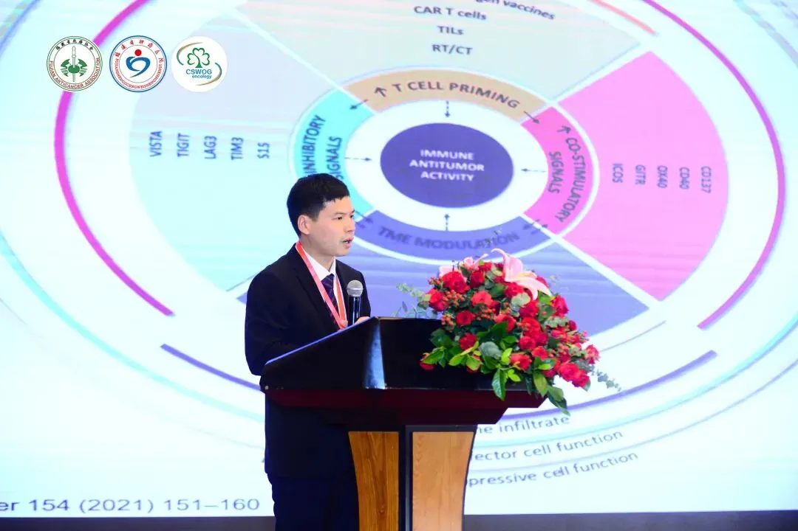

福州大学医工交叉研究院徐贻佺课题组招生启事
原文：https://mp.weixin.qq.com/s?__biz=MzAwMzIzOTk5OQ==&mid=2247498284&idx=2&sn=285be1290874239d32ca630bc726f752&chksm=9b3c837cac4b0a6aa484c863d92dfa15d5664a9ea4fd1c4514655692550fc2f5fea158dadff1#rd 合集：求职/求学/招聘
招生名额：硕士1-2名（学术型/专业型）
招生专业：临床医学，计算机科学，生物医药工程，基础医学，药学，生物信息学均可
研究方向：肺部肿瘤微环境，肺部肿瘤免疫逃逸，罕见肺部肿瘤临床分析
 一、基本信息
一、基本信息

●姓名：徐贻佺
●单位、职务：福建省肿瘤医院、内科二团支部书记
●研究方向：肺癌大数据、基础及临床研究
●联系方式：
Email:xuyiquan1018@fjmu.edu.cn;微信号：xuyiquan2021二、个人简介
●男，医学博士，硕士生导师（学术型+专业型）。福建省肿瘤医院高层次人才（第四层次）、“院优秀青年”。
●主要从事肺癌及食管癌等胸部肿瘤的内科诊疗工作。近年来研究主要方向是通过肿瘤大数据及基础研究解决肺癌临床难点问题。
●近3年在Cancers、Journal of Cancer Research and Clinical Oncology等国际期刊上发表SCI论文近10篇，其中中科院二区及以上4篇，总影响因子近50分，大于5分SCI论文6篇；获得国家自然科学基金青年基金项目1项以及省厅级课题3项，目前在研经费（含配套）118万。
●获得2022年第三届福建省抗癌协会科技奖二等奖。担任中国初级卫生保健基金会少见罕见突变肿瘤专委会委员、福建省免疫学会免疫与转化专委会委员等学术职务。
三、主要科研项目
**● 1、**国家自然科学基金青年科学基金项目, 82102991,外泌体circASPH结合IGF2BP3蛋白调控自噬促进非小细胞肺癌顺铂耐药的机制研究, 2022-01-01至2024-12-31,在研,主持；
**● 2、**福建省卫生健康中青年骨干人才培养项目, 2021GGA042,外泌体circASPH结合miR384调控自噬促进非小细胞肺癌顺铂耐药的机制研究, 2022-01至2024-12,在研,主持；
**● 3、**福建省科技联合创新基金项目，circRAN调控HuR/ELK1轴并激活抗肿瘤免疫抑制非小细胞肺癌进展的机制研究，2022-01至2024-12,在研,主持。
四、获奖经历
**● 1、**获评2022年福建省肿瘤医院“院优秀青年”；
**● 2、**获评2022年福建省抗癌协会科学技术进步奖二等奖（第三）。
五、近五年发表的主要论文
**● 1.**Yiquan Xu, Junfan Pan, et al. Ceramide Synthase 1 Inhibits Brain Metastasis of Non-Small Cell Lung Cancer by Interacting with USP14 and Downregulating the PI3KAKTmTOR Signaling Pathway. Cancers, 2023, 15(7), 1994;
**● 2.**Yiquan Xu, Yina Huang, et al. Effects of single-nucleotide polymorphisms in the mTORC1 pathway on the risk of brain metastasis in patients with non-small cell lung cancer, Journal of Cancer Research and Clinical Oncology, 2019, 146(1): 273-285.
● 3. Junfan Pan, Zhidong Huang,Yiquan Xu. m5C-Related lncRNAs Predict Overall Survival of Patients and Regulate the Tumor Immune Microenvironment in Lung Adenocarcinoma, Front Cell Dev Biol, 2021, 9: 671821.
● 4. Junfan Pan, Zhidong Huang, Yuan Zhang,Yiquan Xu. ADAM12 as a Clinical Prognostic Indicator Associated with Tumor Immune Infiltration in Lung Adenocarcinoma, DNA Cell Biol, 2022,41(4): 410-423.
● 5. Yuan Zhang; Jianbo Chen; Yunan Zhao; Lihong Weng;Yiquan Xu. Ceramide Pathway Regulators Predict Clinical Prognostic Risk and Affect the Tumor Immune Microenvironment in Lung denocarcinoma, Frontiers in Oncology, 2020, 10: 562574.
六、研究生待遇
**● 1.**可推荐至第三军医大学、杜克大学、复旦大学等高水平研究平台深造学习；
**● 2.**除学校、医院补贴外，另外给与一定金额的生活补助。
 往期回顾
往期回顾
歪!?来"Biomamba 生信基地"兼职？********
荷兰马斯特里赫特大学Judith教授招收2023年生物信息学方向博士生求学| 寻找一个生信博导
Ulf’s Computational Biomedicine Lab 博士招聘启示
求学| 寻找一个肠道微生物或系统生物学的博导
南方科技大学第一附属医院刘利平课题组诚聘博士后中南大学湘雅医院李津臣课题组诚聘生物信息学相关多学科交叉人才 您点的每个赞，我都认真当成了喜欢
您点的每个赞，我都认真当成了喜欢